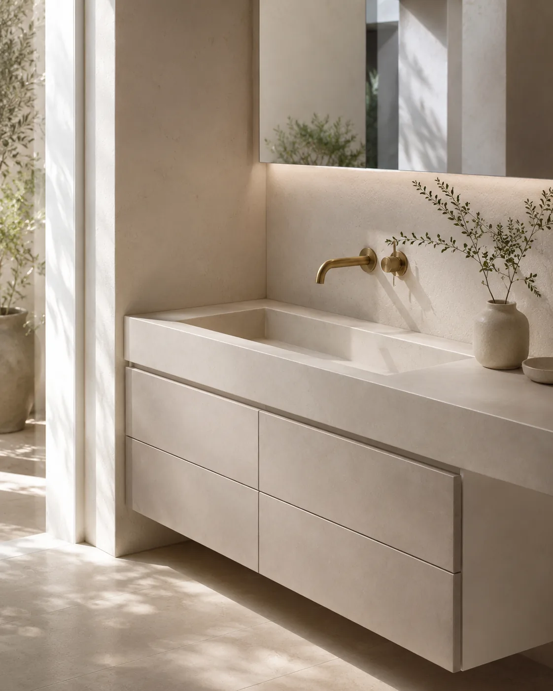
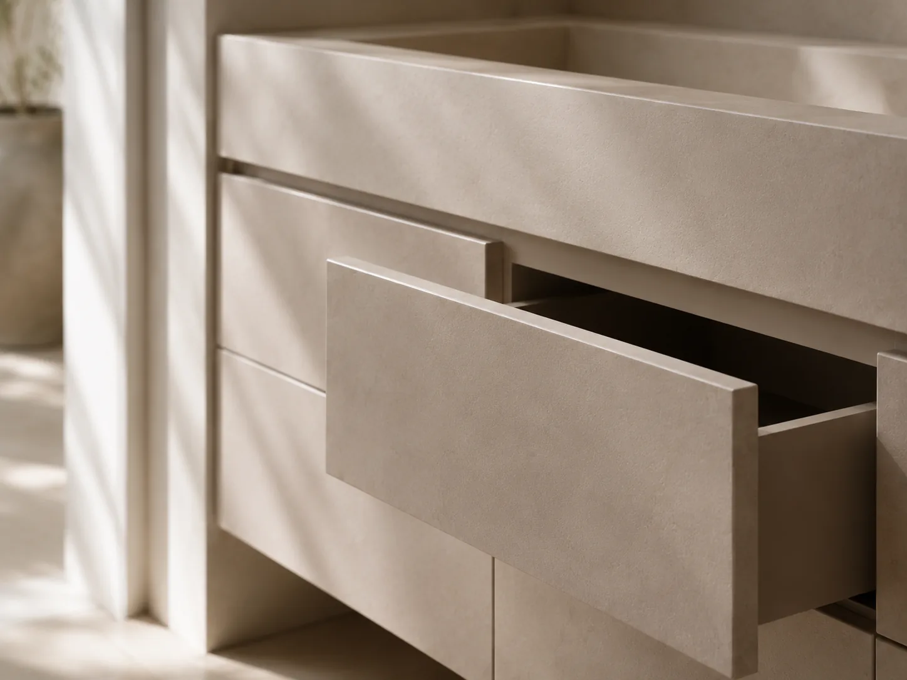
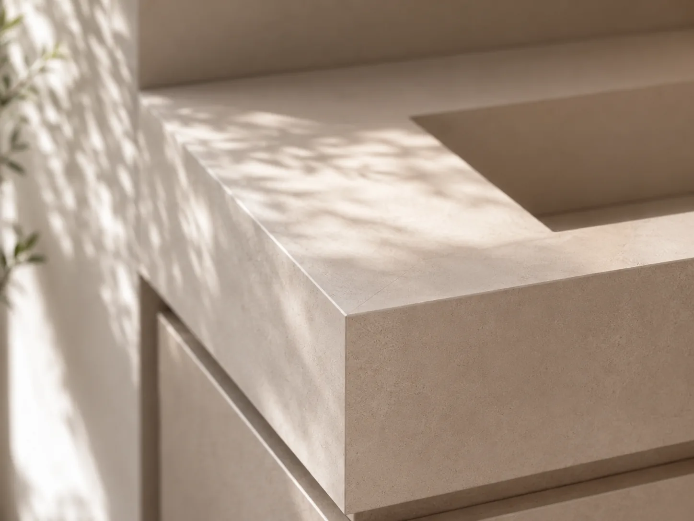
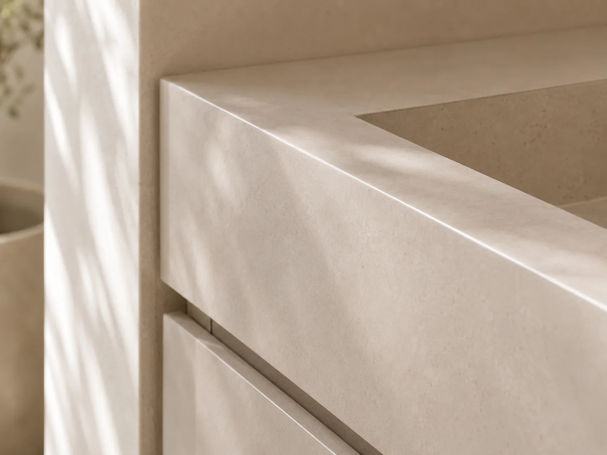
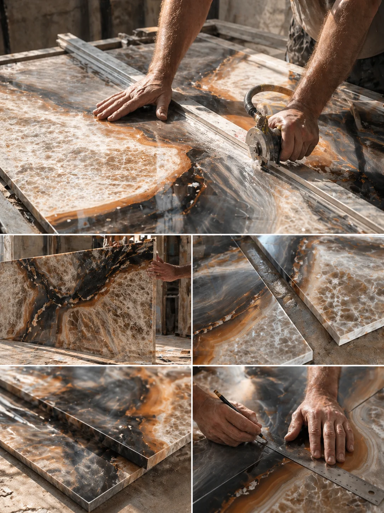

Bespoke Porcelain
Sinks.
Crafted around your
space.
Artiling Studio creates made-to-measure porcelain basins, vanity compositions, custom sink surfaces and mitred bathroom details for refined London interiors.
Signature Service
Porcelain sinks & vanity units, drawn to the millimetre.
Each piece is tailored to its setting, with careful attention to dimension, finish, storage, and installation — creating bespoke porcelain sink and vanity compositions that feel precise, natural, and fully at home in the space.

-
01
Made-to-measure vanity units
Designed around the exact width, storage needs, and layout of your space.
-
02
Integrated porcelain sinks
A seamless sink and surface, fabricated from large-format porcelain.
-
03
Refined finishes
Chosen to complement the surrounding palette, fittings, and bathroom surfaces.
-
04
Precise installation
Measured, fabricated, and installed with clean joins and considered detailing.



Services
Surface work, shaped around the room.
From bespoke porcelain sinks to full bathroom surfaces, each service is planned around proportion, material continuity and precise installation.
-
 01
01Bespoke porcelain sinks
Made-to-measure basins, vanity tops and integrated sink details designed as part of the room.
Explore Bespoke Sinks -
 02
02Large-format porcelain tiling
Architectural porcelain surfaces with fewer joins, refined alignment and a seamless finish.
View Large-Format Tiling -
 03
03Wet room and bathroom tiling
Waterproof bathroom surfaces planned for practical use, visual calm and long-term durability.
Plan a Wet Room -
 04
04Porcelain fabrication
Cut, mitred and detailed porcelain for sinks, niches, returns, edges and custom features.
See Fabrication Detail
Project enquiry
Have a similar project in mind?
Send us a few photos, rough measurements or an idea of the finish you like, and we’ll guide you through what can be fabricated in porcelain.
How it works
Four calm steps.
From first enquiry to final installation, our process is shaped to feel clear, considered, and quietly efficient.
-
01
Initial Enquiry
Tell us about your space, your needs, and the kind of finish you have in mind.
-
02
Design Direction
We shape the right approach around proportion, materials, and how the surface will live in the room.
-
03
Specification & Planning
Dimensions, finishes, and installation details are resolved with care before work begins.
-
04
Making & Installation
The final result is crafted and fitted with precision, ready to feel fully at home in the space.
Why Artiling Studio
Surfaces planned as one calm composition.
A bespoke sink or tiled room should not feel assembled from separate products. Basin, splashback, edge thickness, tap position, storage, veining and surrounding surfaces are planned together so the finished space feels quiet, resolved and built to last.
-
01
Designed from the beginning
Every surface is considered in relation to the room, the light, and the elements around it.
-
02
Quiet detail, carefully judged
Alignment, tone matching, folded edges, joins and transitions are handled so the final result feels intentional rather than overstated.
-
03
Material-led studio thinking
Artiling Studio brings together bespoke porcelain sinks, refined tiling and considered surface work shaped around the character of each space.
-
04
Built for daily use
Beautiful surfaces still need to function well, wear well, and feel right in everyday life.

The Studio
A London studio for material decisions made with care.
Based in London, we work with homeowners, designers, and hospitality spaces looking for a more tailored approach to surfaces.
Samples, drawings and installation details are reviewed together, so proportion, texture and practical fitting decisions are resolved before work begins.
Enquiries
Tell us about your project.
Whether you’re designing a new bathroom, planning a wet room in London or commissioning a bespoke porcelain sink, we’d be glad to hear from you.